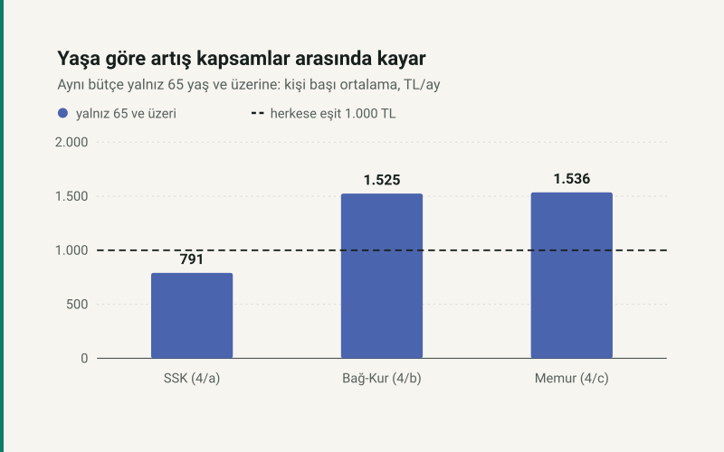

Kısa cevap
Kural henüz yok. Ek artışın yaşa ve prim ödeme gün sayısına göre ayrışabileceği TBMM Plan ve Bütçe Komisyonu'ndaki bütçe görüşmelerinde dile getirildi. Hangi yaşın ne alacağı, oran ya da tutar açıklanmadı. Çalışmanın Aralık'ta bitmesi bekleniyor.
Yaş haritası belli. SGK'nın 2025 yıllığına göre yıl sonunda 12,25 milyon kişi yaşlılık aylığı alıyordu. Ortanca yaş 62. Bu kişilerin %41,9'i 60 yaşın altında, %40,1'i 65 ve üzerinde.
Yaş kuralı fonları kapsamlar arasında da kaydırır. 65 ve üzerinin payı 4/a'da %31,7, 4/b'de %61,1, 4/c'de %61,5. Herkese eşit 1.000 TL'nin bütçesi yalnız 65 ve üzerine verilirse kişi başı 2.497 TL olur. O zaman SSK emeklisinin ortalaması 791 TL'ye iner; Bağ-Kur'da 1.525, memurda 1.536 TL'ye çıkar.
Ne söylendi, ne söylenmedi?
2027 bütçesinin Komisyon görüşmelerinde iki kurum emekliler için konuştu. Çalışma ve Sosyal Güvenlik Bakanlığı 3 Kasım'da yasal zamların üstüne bir iyileştirme üzerinde çalışıldığını söyledi; bu konuyu ilave iyileştirme yazısında ölçtük. Hazine ve Maliye Bakanlığı 5 Kasım'daki oturumda üç şey söyledi. Komisyonun 5 Kasım tutanağına (s.74, incelenmemiş tutanak) göre düzenleme tüm emeklileri kapsayacak. Artışın yaşa ve prim ödeme gün sayısına göre farklılaşması daha adil bulunuyor. Artış seyyanen olsa bile bu ayrım gözetilecek. Rakam verilmedi; nihai çalışmanın büyük ihtimalle Aralık'ta yapılıp bütçeden hemen sonra Meclis'e getirileceği söylendi.
Söylenmeyenler daha çok: yaş sınırları, kademe sayısı, oran ya da tutar ve yürürlük tarihi. Bu yazı bunların hiçbirini tahmin etmiyor. Yaptığı şey, yaşa bağlanacak herhangi bir kuralın kime dokunacağını bugünkü veriyle göstermek.
Emekliler kaç yaşında?
SGK İstatistik Yıllığı her kapsam için aylık alanları tek yaşa göre veriyor. Aşağıda yalnız yaşlılık aylığı alanlar var: 4/a, 4/b (tarım dahil) ve 4/c toplamı. En kalabalık tek yaş 60; o yaşta 495.249 kişi aylık alıyor.
| Yaş | Kişi | Pay |
|---|---|---|
| 50 altı | 1.386.119 | %11,3 |
| 50–54 | 1.783.468 | %14,6 |
| 55–59 | 1.963.349 | %16,0 |
| 60–64 | 2.213.206 | %18,1 |
| 65–69 | 1.915.251 | %15,6 |
| 70–74 | 1.399.577 | %11,4 |
| 75 ve üzeri | 1.593.749 | %13,0 |
| Toplam | 12.254.719 | %100,0 |
Ortanca emekli 62 yaşında; 60 altı %41,9
Tek yaşa göre yaşlılık aylığı alan kişi. Renkler aşağıdaki kademeli tasarımın üç yaş grubu.
Dağılımın sol omzu dikkat çekiyor: 43 ile 60 yaş arası, normalde emekli olunmayacak yaşlar. Bu, 1999 öncesi girişliler için yaş şartının 2023'te kaldırılmasının izi (5510 Geçici m.95). O kuşak yaşa göre bir artışta en genç grubu oluşturuyor. Aynı kuşağın kanunen daha az prim günüyle emekli olabildiği de doğru; bunu prim günü yazısında ayrıca hesapladık.
SSK, Bağ-Kur ve memur emeklisinin yaşı farklı
Yaşa bağlanan bir kural, kapsamlar arasında da bir dağıtım kararıdır. Çünkü üç kapsamın yaş yapısı birbirinden çok farklı:
| Kapsam | Kişi | Ortanca yaş | 55 altı | 65 ve üzeri |
|---|---|---|---|---|
| 4/a (SSK) | 8.784.149 | 59 | %32,0 | %31,7 |
| 4/b (Bağ-Kur) | 1.791.204 | 67 | %11,2 | %61,1 |
| 4/c (memur) | 1.679.366 | 67 | %9,3 | %61,5 |
4/a'da ortanca 59, 4/b ve 4/c'de 67. SSK emeklilerinin %32,0'i 55'in altında; Bağ-Kur'da bu pay %11,2, memurda %9,3. Yaş eşiği yükseldikçe pay 4/b ve 4/c'ye kayar.
Aynı bütçe, üç dağıtım
Karşılaştırmayı adil kılmak için bütçe sabit tutuldu: her yaşlılık aylığı alana ayda 1.000 TL eşit artış. Bunun yıllık maliyeti 12.254.719 kişi × 1.000 TL × 12 = 147,1 milyar TL. 1.000 TL bir tahmin değil, ölçü birimi; gerçek tutar ne olursa oranlar aynı kalır. İlave iyileştirme yazısında aynı 1.000 TL'yi yılda 195,9 milyar TL bulmuştuk; fark sayılan birimde. Orada malullük ve ölüm aylıkları dahil 16,32 milyon dosya, burada yalnız yaşlılık aylığı alan kişi sayıldı. Üç varsayımsal dağıtım:
- Eşit: herkese 1.000 TL.
- Yalnız 65 ve üzeri: aynı para yalnız 4.908.577 kişiye; kişi başı 2.497 TL. 7.346.142 kişi hiç almaz.
- Kademeli 1:2:3: 55 altı bir pay, 55–64 iki pay, 65 ve üzeri üç pay. Bir pay 467 TL.
| Yaş grubu | Kişi | Eşit | Yalnız 65+ | Kademeli 1:2:3 |
|---|---|---|---|---|
| 55 altı | 3.169.587 | 1.000 | 0 | 467 |
| 55–64 | 4.176.555 | 1.000 | 0 | 934 |
| 65 ve üzeri | 4.908.577 | 1.000 | 2.497 | 1.401 |
| Kapsam | Eşit | Yalnız 65+ | Kademeli 1:2:3 |
|---|---|---|---|
| 4/a (SSK) | 1.000 | 791 | 932 |
| 4/b (Bağ-Kur) | 1.000 | 1.525 | 1.167 |
| 4/c (memur) | 1.000 | 1.536 | 1.178 |
Eşit dağıtımda her kapsamın ortalaması 1.000 TL. Yaş ağırlığı arttıkça 4/a'nın ortalaması düşer, 4/b ve 4/c'ninki yükselir. Bunun nedeni kapsamlara göre bir tercih değil, yaş yapısı. Ama sonuç, kuralın adı ne olursa olsun, kapsamlar arası bir aktarımdır.
Yaş neyi söylemez?
- Aylığın düzeyini. Tabandaki emekli her yaşta var. Yaş, ihtiyacın değil, sigortalılık geçmişinin bir göstergesi. 65 yaşındaki yüksek aylıklı da, 50 yaşındaki taban aylıklı da kendi grubunun tutarını alır.
- Hak sahiplerini. Malullük ve ölüm aylığı alanlar bu tablolara girmedi. 2025 sonunda yaşlılık dışında aylık alan 4,57 milyon kişi daha var; ölüm aylığı alanların bir kısmı çocuk. Yaşa bağlı bir kuralın onlara nasıl uygulanacağı ayrı bir karar.
- Dosya sayısını. Burada kişi sayıldı. Birden fazla aylığı olan kişi ödemede birden fazla dosya demek; bütçe hesabı dosya üzerinden yapılırsa rakam büyür.
Bundan sonra
- Aralık: Çalışmanın tamamlanması ve bütçe sonrası bir kanun teklifi bekleniyor. Metin gelince bu yazı seçilen yaş sınırlarıyla yeniden hesaplanır.
- 4 Ocak 2027: Aralık TÜFE'si ile yasal zam kesinleşir; Ocak 2027 emekli zammı yazısı kendini günceller.
- Kendi aylığınız: emekli zammı hesaplama aracı yalnız yasal zamı hesaplar; açıklanmamış bir iyileştirmeyi eklemez.
Varsayımlar ve sınırlar
- Üç dağıtım da varsayımsaldır; hiçbiri açıklanmış bir kural değil. Ölçü birimi ayda 1.000 TL eşit artıştır.
- Veri 2025 yıl sonu kişi sayısıdır. 2026'da bağlanan ve ölen emekliler dahil değil; oranlar yıl içinde yavaş değişir.
- Yalnız yaşlılık aylığı alanlar sayıldı. Malullük ve ölüm aylığı alanlar ile vatani görev ödemeleri dışarıda.
- Yaş, tablonun tek yaş satırıdır; kuralın yaşı hangi tarihe göre sayacağı bilinmiyor.
Kaynaklar
- SGK İstatistik Yıllığı 2025, Bölüm 2: Tablo 2.7 (4/a), 2.21 (4/b) ve 2.33 (4/c), yaşa ve cinsiyete göre aylık alanlar (16 Kasım 2026'da indirildi)
- TBMM Plan ve Bütçe Komisyonu tutanağı, 5 Kasım 2026, Hazine ve Maliye Bakanlığı bütçesi, s.74 (incelenmemiş tutanak)
- Çalışma ve Sosyal Güvenlik Bakanlığı, 2027 bütçe sunumu, TBMM Plan ve Bütçe Komisyonu, 3 Kasım 2026
- 5510 sayılı Kanun Geçici m.95: mevzuat.gov.tr
Sık sorulan sorular
Emekli zammı yaşa göre mi verilecek?
Henüz kural yok. Hazine ve Maliye Bakanlığı 5 Kasım 2026'da artışın yaşa ve prim ödeme gün sayısına göre farklılaşmasının doğru olacağını söyledi. Yaş sınırı, oran ve tutar açıklanmadı; metnin Aralık'ta gelmesi bekleniyor.
Kaç emekli 65 yaşın üstünde?
SGK'nın 2025 yıl sonu verisine göre 4.908.577 kişi. Bu, yaşlılık aylığı alanların %40,1'i.
Yaşa göre artış Bağ-Kur ve memur emeklisine daha çok mu gider?
Yaş yapısı nedeniyle evet. 65 ve üzerinin payı 4/a'da %31,7, 4/b'de %61,1, 4/c'de %61,5. Yaşı yüksek kapsamın kişi başı ortalaması yükselir.